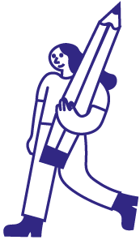
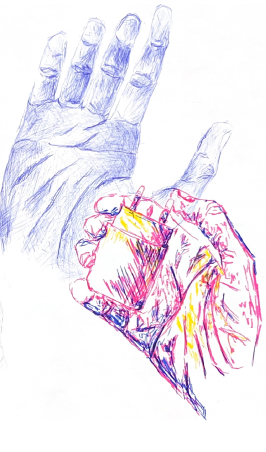
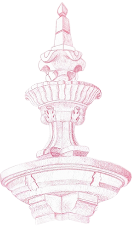
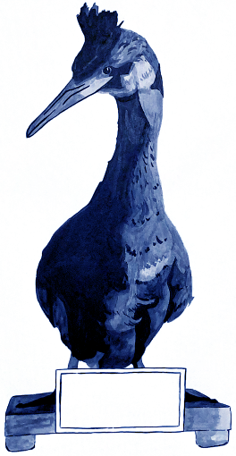
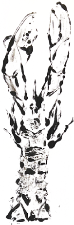
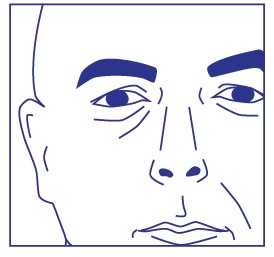
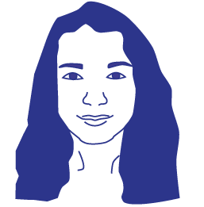

drawing and representation
This subject will alow you to explore the accentuation of graphic expressiveness through different graphic solutions. Furthermore, it will be possible for you to experiment different representation pratics. The final assessment is based of the conceptual and technical skills acquired and the work carried out by you. Therefore, the final evaluation will take into account Participation - 25% - and Practical Work - 75%. There is no exam but be aware! You must attend at least 75% of both practical and theoretical classes or your assessment will be compromised. |
|||
|---|---|---|---|
| WORK | TEACHERS | ||
|  |  |  |  |
| Hand observation drawing | Observation drawing of a water source from Jardim Botânico Universidade de Coimbra | Observation exercise with Chinese Ink | Monotipia |
|  |  | ||
| Valdemar Mendes | Ana Catarina Parente | ||
| uc46732@uc.pt | aparente@uc.pt | ||